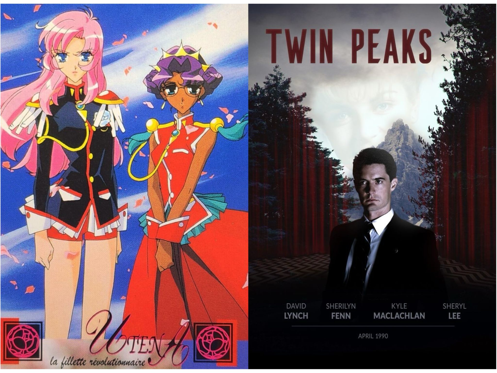
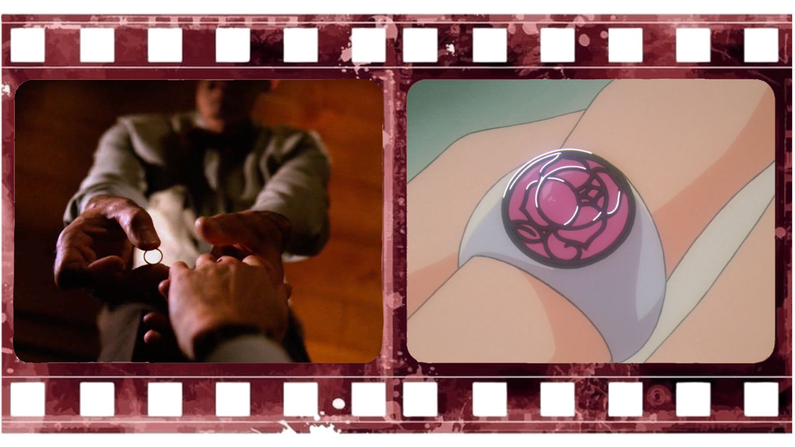
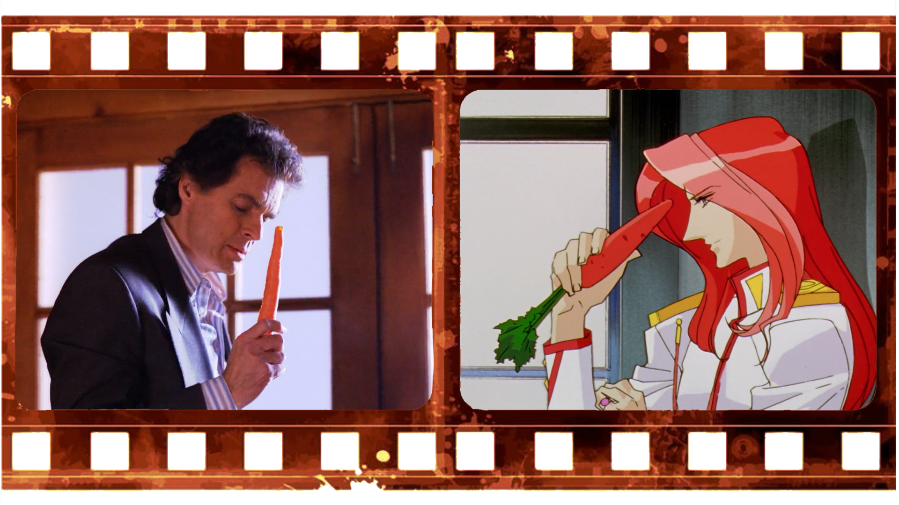

Revolutionary Girl Utena (1997) - Twin Peaks (1990)

✦ Kunihiko Ikuhara -> director of Revolutionary Girl Utena ✦ David Lynch -> director of Twin Peaks
Kunihiko Ikuhara has officially declared himself a big fan of David Lynch. Ikuhara surely
took inspiration from Lynch's surrealistic cinema and probably put
some references in his allegorical anime Revolutionary Girl Utena.
THE CONCEPT
✦ Utena Tenjou = Dale Cooper
✦ Anthy Himemiya = Laura Palmer
✦ Akio Othori = Bob
✦ Dios = Leland Palmer
✦ Both series have incestous relationships: rather than disgusting,
it is supposed to be disturbing...
✦ In Revolutionary Girl Utena:
Anthy and Akio are sibilings, but they behave almost as a dad and a daughter.
Akio abuses Anthy to control her: she doesn't rebel because she still sees Dios in Akio, not realizing he has radically changed.
The serie makes it clear that Dios was (or seemed) "good" and Akio is "bad".
Akio wants Anthy to be girlish, to depend on him and to feel guilty.
In ep. 34 Dios shows to little Utena how "Anthy became a witch".
In ep. 39 Utena discovers Akio's planetarium and his fake projections:
it is reasonable to think that "Anthy being a witch" was an illusion too, created to control Anthy.
✦ In Twin Peaks:
Leland and Laura are dad and daughter. Bob is a demonic spirit who posseses Leland and abuses Laura.
Bob wants Laura to behave like the Laura shown in Twin Peaks: Fire Walk with Me: to be a stereotypical but submissive femme fatale.
Summarizing: ✦ Anthy is abused by Akio (who was Dios, her brother)
✦ Laura is abused by Bob (who possesses Leland, her father)
✦ In both last episodes...
✦ In Revolutionary Girl Utena:
In ep. 39 Utena thinks she failed to save Anthy, while actually succeded:
Utena saved Anthy's soul from Akio's control, even if she didn't understand the main problem -the patriarchy- and physically died.
Also, Akio finally shows explictly to Utena that he intends to "conqueer" her and make her a stereotypical good wife.
✦ In Twin Peaks:
Cooper metaphorically saves Laura by solving her murder, but in the last episode of the second season
he anyway remains trapped in the lodge, not understanding what's happening nor why.
Also, Bob explictly tries to "conqueer" Cooper like he did with Bob.
Summarizing: ✦ Utena metaphorically saves Anthy, but doesn't understand she did.
✦ Cooper metaphorically saves Laura, but doesn't understand the whole situation.
LAURA AND ANTHY
Laura and Anthy are very similar: ✦ Both are associated with 2 colors: purple and red.
・ Purple indicates witches, poison, mysteries and royalty;
・ Red indicates sins (for Eve's apple), senxuality and violence; ✦ Both have a "royal" status but are also abused: Anthy is Akio's sister -the most powerful man in the Academy- and Laura is popular. ✦ Both think they're not loved by anyone because of their abuser's brainwashing and feel lonely. ✦ Both are indirectly abused by a relative. ✦ Both are ultimately saved by someone who doesn't know anything about their real situation but (metaphorically or literally) loves them. ✦ Both have bipolar traits: they're extremely fascinating and intelligent, though usually dressed in covering clothes and apparently innocent. ✦ Both are immaterial during the serie. ✦ Both are at the same time aware of everything but impotent in front of their abuser. ✦ Both have a secret diary with another character.
SIMILAR SCENES AND DETAILS
In both videos (from Utena's ep. 37 and Twin Peaks' ep. 22 season 2) there's the declaration of a future meeting. Both are two of the most ambiguos scenes of the series.


✦ Both rings are given to the protagonists in the first episode (Utena's ep. 1 and Twin Peaks' ep. 1 season 2) and are necessary to save Anthy/Laura. ✦ Touga and Benjamin are similar characters: both are patriarchal men. Benjamin holds vegetables because he's trying to quit smoking and Touga because he's going to ride a horse. Touga's carrot is a phallic symbols: making it point to his head shows what he's expecting from Utena. Photos from Utena's ep. 35 and Twin Peaks' ep. 18 season 2.
✦ In ep. 31 of Utena, Nanami discovers Anthy's relationship with Akio and remains traumatized. The setting remembers the red room of Twin Peaks. ✦ In the whole serie of Utena, there are a lot of greek statues, similar to the Venus Pudica.
✦ Akio's fast car rides could be a reference to Lynch's movie Lost Highways.
Keep this in mind! This article... ✦ Is written by a non-native english without the use of any AI; ✦ Contains DANGEROUS SPOILERS!!! ✦ Contains personal theories, written as brief as possible in order to garant an enjoyable reading; ✦Doesn't absolutely want to belittle these masteripieces nor their themes, such as abuse: simplification is meant
to reduce the reader's eye effort, who knows their deepness; ✦ Is about the following operas: ・Revolutionary Girl Utena (serie of 39 ep.) ・Twin Peaks (serie of 2 seasons)
・Twin Peaks: Fire Walk with Me (movie) Therefore, Utena's movie, Utena's manga and the 3rd season (the return) of Twin Peaks won't be considered; ✦ Names, for convenience, only Kunihiko Ikuhara, who's a member of the group BePapas, the creators of Revolutionary Girl Utena.